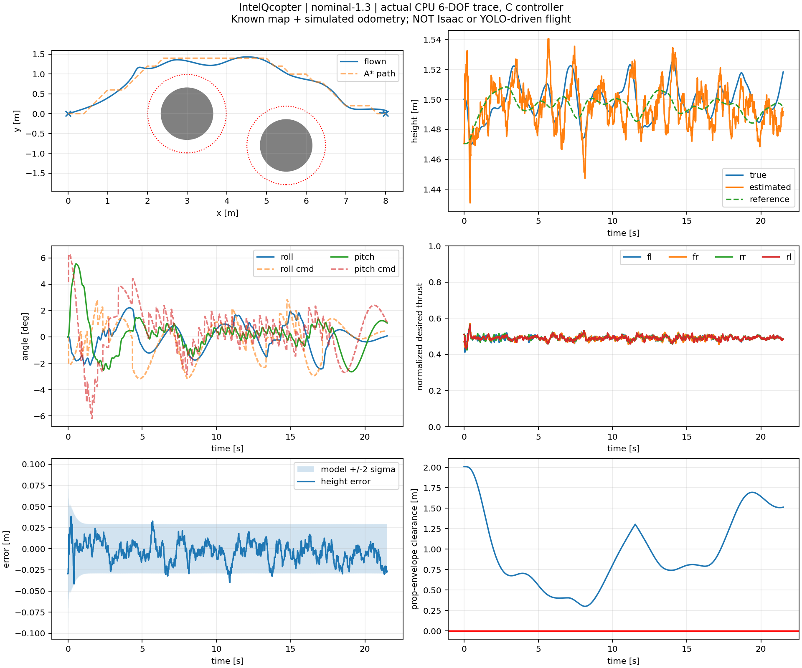
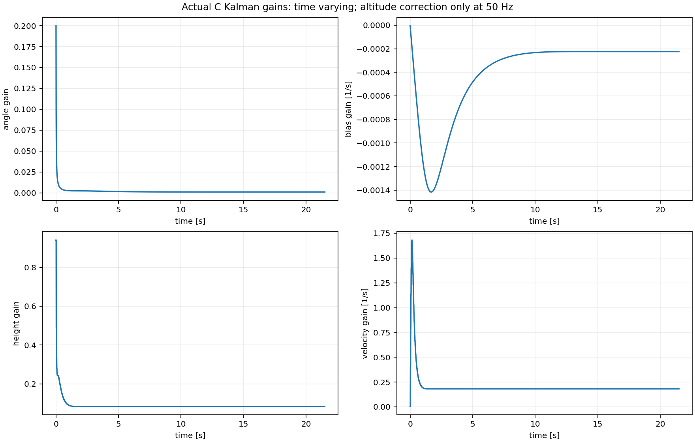
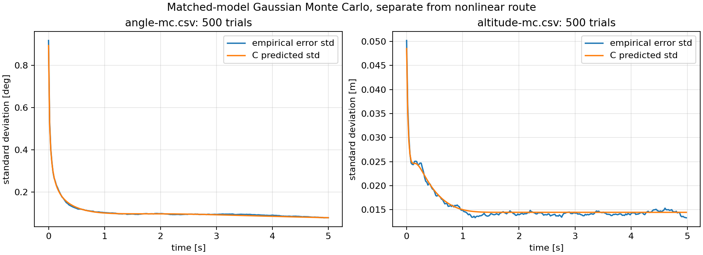
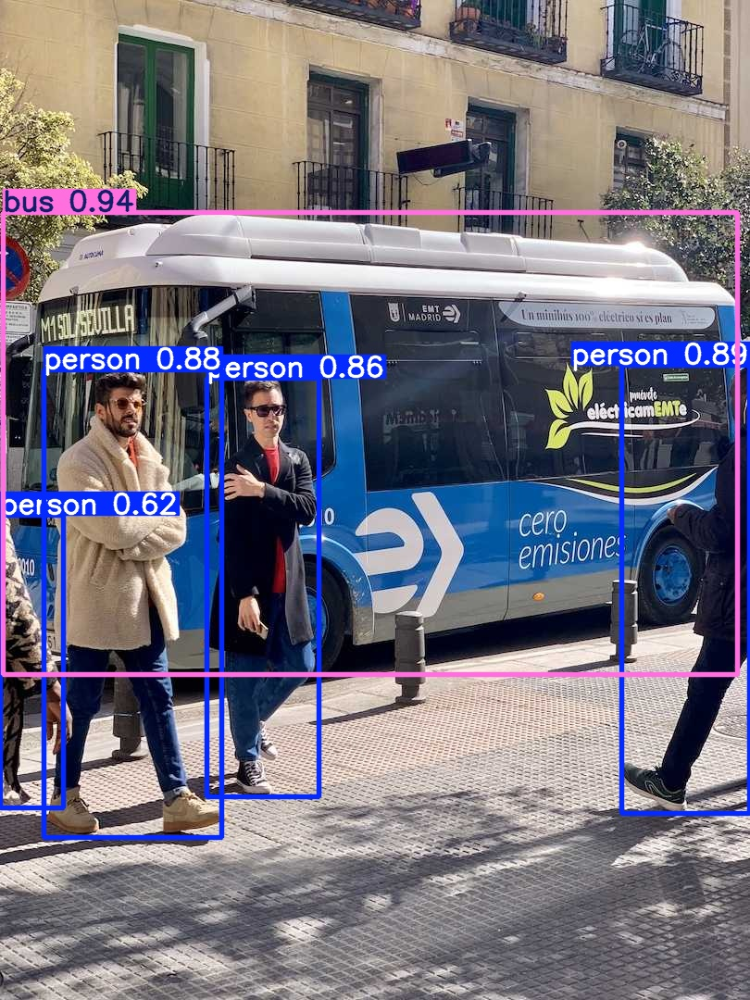
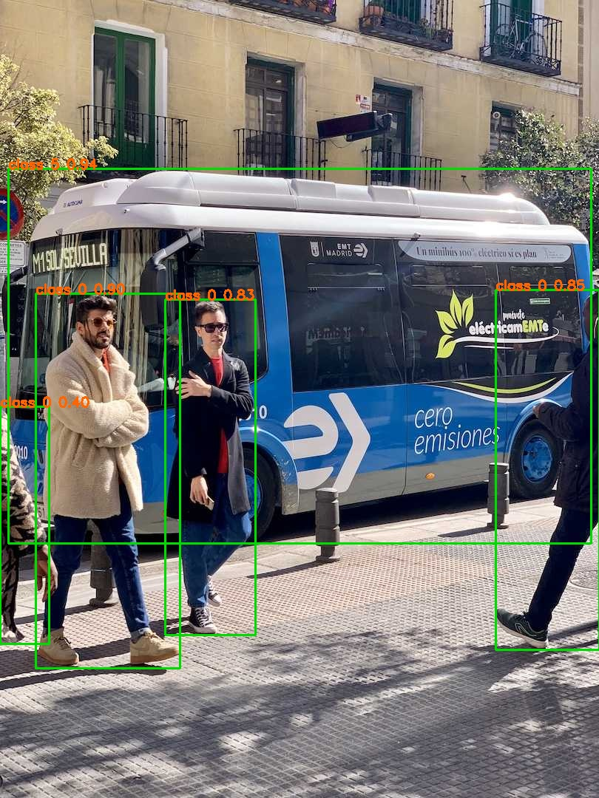

500 Hz C flight equations, a 6-DOF plant, static-map A* navigation, and two ROS 2 DDS adapter nodes. Every result below links to its saved data.
One simulation second per playback second. This is a visualization made from the original trace. The displayed drone includes the 9047 propeller envelope.





| Step | Measured result / remaining boundary |
|---|---|
| C controller + CPU flight model | 6/6 route cases succeeded. No identified physical airframe. |
| ROS 2 DDS | Route succeeded with two Python adapter nodes. Timing report; no hard-real-time or UART claim. |
| ROS C++ + YOLO nodes | Source authored; ROS wrappers not compiled. C++ navigation core and ONNX engine tested separately. |
| Isaac Sim | GPU startup failed. Original launch log. USD asset validates but has no executed flight adapter. |
| Live unknown-obstacle autonomy | Metric sensing, VIO, map updates, sensor failure handling and live replanning remain integration work. |